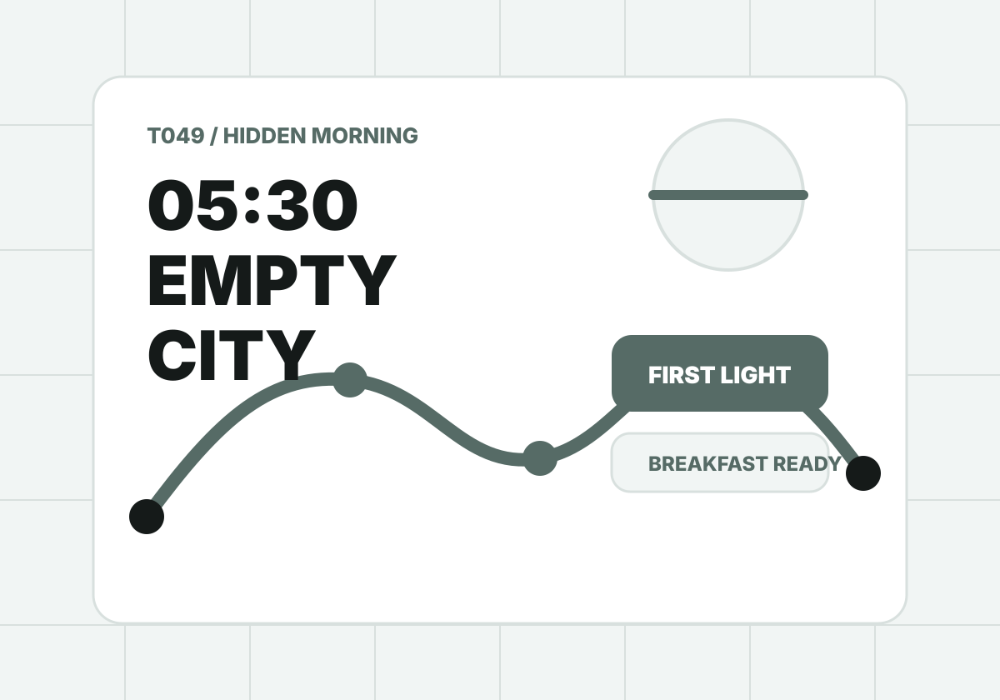

T049 / Hidden morning route
在城市醒來前，先把它玩一輪。
早晨不是犧牲睡眠，而是換到安靜街道、第一籠早餐、沒有人的景點與最柔的光。把你的起床能力和候選點放進來，工具會排出一條不逞強的空城路線。

Morning anchors
早晨候選點
把真正會開、走得到、早上有價值的點放進來。空城玩法不是塞景點，是搶在城市醒來前完成最值得的一段。
Result
先放入早晨候選點，再生成你的空城路線。
結果會包含起床可行度、清晨時間表、早餐與第一景點、睡過頭備案、分享文和 ChillOut prompt。